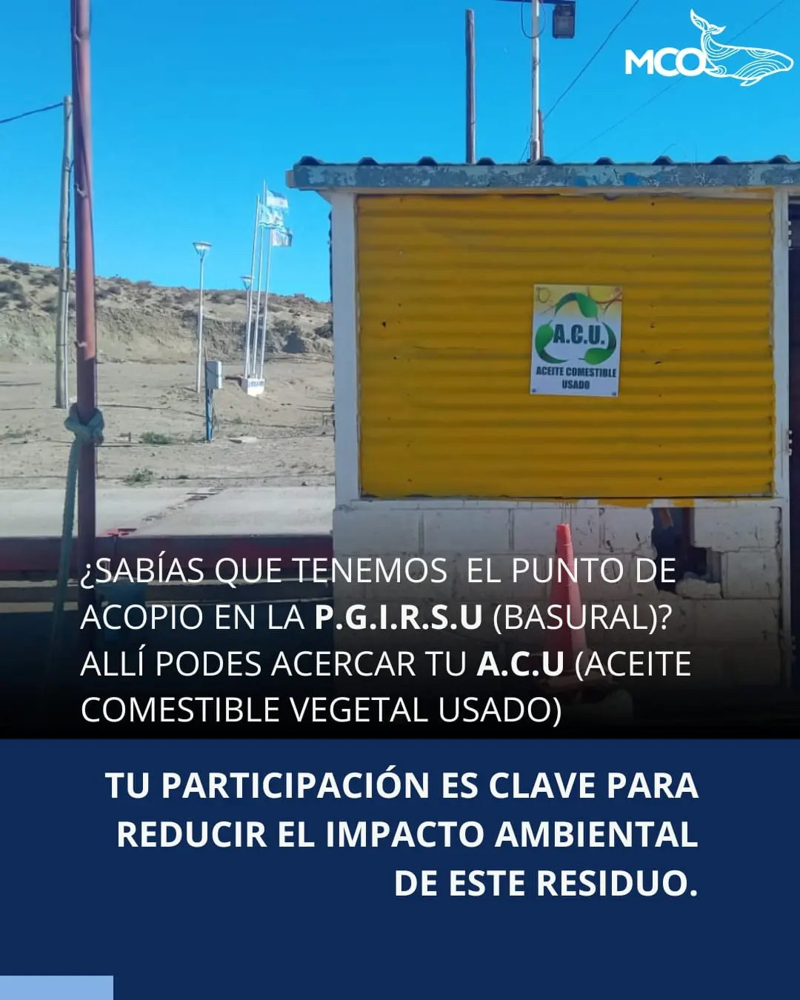

¿Sabías que las oficinas de ambiente estamos a tu servicio? Acá podes:
- - Hacer tu denuncia ambiental o canina, si ves alguna situación que afecte al medio ambiente o a los animales.
- - Solicitar el certificado ambiental municipal, que te permite realizar actividades que cumplan con la normativa ambiental vigente.
- - Registrar tu vehículo de transporte de residuos peligrosos, camión de agua o contenedor, para garantizar la seguridad y la calidad de estos servicios.
- Te esperamos de lunes a viernes de 8 am a 15 pm en nuestras oficinas Beauvoir 844 B° 3 de Febrero. También puedes contactarnos por teléfono 2974427886 o redes sociales. Estamos para ayudarte y cuidar juntos el ambiente.
A.C.U (Aceite comestible vegetal usado)
- •El A.C.U. es un líquido altamente contaminante para el ambiente, con sólo 1lt se contamina 1000lts de agua, además de destruir la fertilidad de los suelos.
- •Si tiras A.C.U. al sistema de cloacas este se adhiere en las paredes de las tuberías produciendo un taponamiento y posterior rebalse de aguas servidas ocasionando problemas mayores.
- •El biodiesel proveniente de A.C.U. reduce un 88% las emisiones de gases del efecto invernadero.
- •Si vertis A.C.U. en cuerpos de agua forma una capa superior que impide el intercambio gaseoso del agua, generando la putrefacción e impidiendo el desarrollo de la vida.
- Por estas y más razones, solicitamos a comerciantes gastronómicos y comunidad en general entregue su A.C.U. a recuperadores urbanos, o lo acerque a nuestro punto de acopio en P.G.I.R.S.U (Basural)
 
Recuperador Urbano
- ¡Colaboremos con los héroes de nuestras calles! Los recuperadores urbanos son verdaderos guardianes del medio ambiente, trabajando incansablemente para transformar nuestros desechos en oportunidades de cambio.
- Su labor es vital para la sostenibilidad de nuestra ciudad. Recorren cada rincón recolectando materiales reciclables, también contribuyendo al bienestar de nuestro planeta. Cada botella, cada cartón, tiene el potencial de ser una nueva vida gracias a ellos.
- Pero su misión va más allá: son agentes de conciencia ambiental. Nos enseñan la importancia de reducir, reutilizar y reciclar. Trabajemos codo a codo con estos guerreros del reciclaje para construir un futuro más limpio y sostenible.
- La cooperación con los recuperadores urbanos es esencial. Separemos nuestros residuos, organicemos campañas de reciclaje y apoyemos sus iniciativas. Juntos, podemos marcar la diferencia y construir una Caleta donde el respeto por nuestro entorno sea la norma.
- ¡Únete a la revolución verde! Trabajemos con los recuperadores urbanos para lograr un cambio real y duradero. Hagamos de cada día una oportunidad para cuidar de nuestra casa común.

Punto Verde Movil
- El Punto Verde Móvil es una herramienta muy importante para la gestión de residuos de la población. Solicitamos a los vecinos cuidarlo y no arrojar vidrio, restos de comida, trapos, animales muertos. Etc
- El Punto Verde Móvil, estará ubicado en el patio de la Secretaria de Ambiente, ubicada en Beauvoir 844 (frente a la Escuela 29)
- El PVM, tiene como fin la separación de plásticos, cartones y papeles, latas de aluminio, metales varios y RAEE's (Residuos de Aparatos Eléctricos y Electrónicos)
- Gracias a todos los vecinos que se suman a la iniciativa de la separación de residuos.